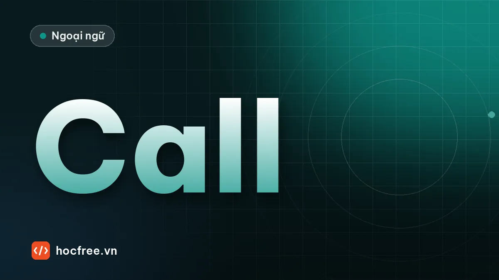

Gọi điện thoại công việc bằng tiếng Anh: mẫu câu và hội thoại
Mẫu câu gọi và nhận cuộc gọi, để lại lời nhắn, đánh vần tên, xác nhận số và ngày giờ, xin nhắc lại khi nghe không rõ, kèm 2 hội thoại mẫu.

Học xong bài này, bạn sẽ
- Mở đầu cuộc gọi, hỏi gặp người, để lại lời nhắn
- Xác nhận lại tên, số, ngày giờ
- Xử lý khi nghe không rõ hoặc mất sóng
Nên học trước: Small talk nơi công sở
Nội dung bài viết
Gọi điện bằng tiếng Anh khó hơn nói chuyện trực tiếp, vì bạn không thấy nét mặt hay cử chỉ, âm thanh có thể nhiễu, và đầu dây bên kia thường nói nhanh. Tin tốt là cuộc gọi công việc đi theo một khung khá cố định. Thuộc khoảng 30 mẫu câu trong bài này là bạn xử lý được phần lớn cuộc gọi, kể cả khi nghe không rõ. Đây cũng là chủ đề quen thuộc của Part 3–4 (tin nhắn thoại, cuộc gọi đặt hàng, đổi lịch).
Khi bạn gọi đi
| Bước | Mẫu câu |
|---|---|
| Chào, giới thiệu | Hello, this is Nam from Viet Steel. (Không nói "I am Nam" khi gọi điện.) |
| Xin gặp người | Could I speak to Ms. Johnson, please? / I'd like to speak to someone in the sales department. |
| Nêu lý do | I'm calling about our order from last week. / I'm calling to confirm the meeting on Thursday. |
| Khi người cần gặp vắng | Could I leave a message? / Could you ask her to call me back? / When is a good time to call again? |
| Kết thúc | Thanks for your help. / I'll send you an e-mail with the details. / Have a nice day. |
Khi bạn nhận cuộc gọi
| Bước | Mẫu câu |
|---|---|
| Nhấc máy | Good morning, Viet Steel, Lan speaking. How can I help you? |
| Hỏi người gọi | May I ask who's calling? / Could I have your name, please? |
| Chuyển máy | Just a moment, please. I'll put you through. / Hold on, please. |
| Người cần gặp vắng | I'm afraid he's not available right now. He's in a meeting. / She's out of the office today. |
| Nhận lời nhắn | Would you like to leave a message? / I'll make sure he gets the message. |
Xác nhận thông tin: tên, số, ngày giờ
Sai một con số trong cuộc gọi có thể làm giao nhầm cả lô hàng. Luôn nhắc lại để xác nhận:
- Could you spell your name, please? → That's J-O-H-N-S-O-N, right?
- Let me read that back to you: oh-nine-oh, one-two-three, four-five-six-seven.
- So that's Thursday, the 15th, at 2 P.M. Is that correct?
- Was that fifteen or fifty? (Hai số rất dễ nhầm, xem bài phát âm.)
Đánh vần và đọc số
- Khi đánh vần, dùng từ để phân biệt chữ dễ nhầm: B as in Bravo, D as in Delta, M as in Mike, N as in November.
- Số điện thoại đọc từng chữ số; số 0 thường đọc là oh (hoặc zero); hai số giống nhau liền nhau có thể đọc double: 55 = double five.
- Email: @ = at, . = dot, _ = underscore, - = dash hoặc hyphen.
Khi nghe không rõ
Đừng nói "Yes, yes" khi không hiểu. Hỏi lại là chuyên nghiệp, đoán bừa mới là thiếu chuyên nghiệp.
| Tình huống | Câu dùng |
|---|---|
| Không nghe kịp | Sorry, could you say that again, please? |
| Người kia nói nhanh | Could you speak a little more slowly, please? |
| Âm thanh nhiễu | Sorry, the line is bad. Could you repeat that? / You're breaking up. |
| Không hiểu một từ | Sorry, what do you mean by "lead time"? |
| Mất sóng | I think we got cut off. I'll call you right back. |
| Kiểm tra lại ý | Just to make sure I understand, you need the samples by Monday? |
Hội thoại mẫu 1: gọi đổi lịch giao hàng
Receptionist: Good afternoon, Pacific Logistics. Anna speaking.
Tuan: Hello, this is Tuan from Hoang Long Electronics. Could I speak to Mr. Lee, please?
Receptionist: I'm afraid Mr. Lee is in a meeting right now. Would you like to leave a message?
Tuan: Yes, please. I'm calling about our shipment for next Monday. We'd like to move the delivery to Wednesday, because our warehouse will be closed for inspection on Monday.
Receptionist: All right. So that's a change from Monday to Wednesday. Could I have your phone number?
Tuan: Sure. It's oh-nine-one, two-two-four, eight-eight-three-oh.
Receptionist: Let me read that back: 091 224 8830.
Tuan: That's right. Could you ask him to call me back before 5 today?
Receptionist: Of course. I'll make sure he gets the message.
Tuan: Thank you very much. Goodbye.
Hội thoại mẫu 2: nhận cuộc gọi, nghe không rõ
Mai: Hello, Mai speaking.
Caller: Hi Mai, it's David from Sunrise Packaging. I'm calling about the… [noise] … for the cartons.
Mai: Sorry, David, the line is a bit bad. Could you repeat that?
Caller: Sure. I'm calling about the new price list for the cartons. It'll go up by five percent from June.
Mai: I see. Was that five or nine percent?
Caller: Five. Five percent.
Mai: OK, thanks. Could you e-mail me the new price list so I can show it to my manager?
Caller: No problem. I'll send it this afternoon.
Bài tập
Bài 1. Nói câu tiếng Anh phù hợp: (1) Bạn gọi đến công ty đối tác, muốn gặp bộ phận kế toán. (2) Đối tác nói quá nhanh. (3) Bạn muốn xác nhận lịch họp là thứ Ba lúc 10 giờ sáng. (4) Bạn nhận điện thoại hộ sếp đang đi công tác.
Xem câu mẫu
(1) Hello, this is… from… Could I speak to someone in the accounting department, please? (2) Sorry, could you speak a little more slowly, please? (3) So the meeting is on Tuesday at 10 A.M. Is that correct? (4) I'm afraid Mr. … is on a business trip this week. Would you like to leave a message?
Bài 2. Đóng vai với một người bạn (hoặc tự nói cả hai vai): bạn gọi cho nhà cung cấp hỏi tại sao lô linh kiện chưa đến. Dùng ít nhất 2 câu xác nhận thông tin và 1 câu xin nhắc lại. Ghi âm lại.
Xem gợi ý khung
Chào và giới thiệu → xin gặp người phụ trách → nêu lý do (PO number, ngày dự kiến) → nghe giải thích, xin nhắc lại một chi tiết → xác nhận ngày giao mới → đề nghị gửi email xác nhận → cảm ơn, chào.